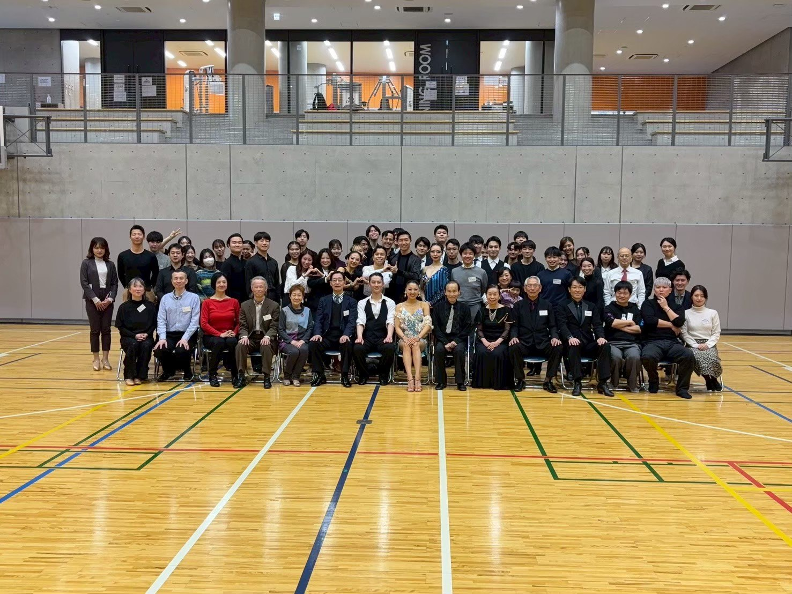
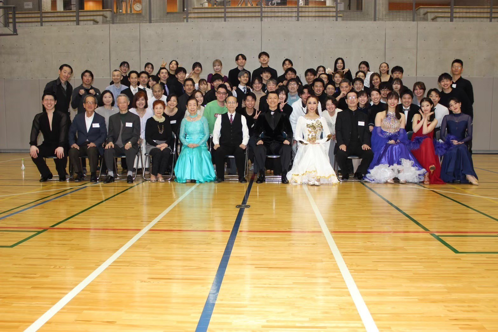
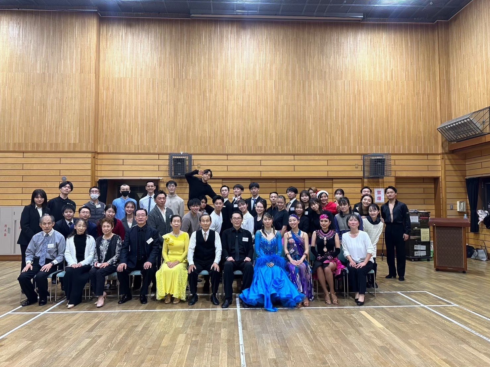

60周年記念FESTA
東京理科大学舞踏研究部 60周年記念FESTA 開催決定
2027年2月11日（木・祝）、東京都立産業貿易センター 台東館 6階展示室にて開催予定です。 詳細は特設ページにて順次お知らせします。
最新のお知らせLatest News
60周年記念FESTA
2027年2月11日（木・祝）、東京都立産業貿易センター 台東館 6階展示室にて開催予定です。 詳細は特設ページにて順次お知らせします。
About
FANTASISTAは、東京理科大学舞踏研究部の卒部生によるOBOG会です。
2025年度は、懐かしい仲間との再会や世代を超えたつながりを大切にしながら、 年8回の定例会や記念事業の準備を重ね、東京理科大学舞踏研究部の60年を振り返る土台を整えました。
2026年度は、創部60周年という大きな節目を迎えます。思い出を振り返りながら、 OBOG・現役生・関係者が世代を超えて集い、FANTASISTAのこれからの物語をともに描く一年にしていきます。
活動と体制を見るThis Year
定例会や現役部員との意見交換を重ね、創部60周年に向けた準備を進めました。
会長・副会長・事務局を中心に、創部60周年を見据えた運営体制を整えています。
現役部員との連携窓口を継続し、FESTAや周年企画に向けた調整を進めています。
Gallery

活動写真を掲載しています。

活動写真を掲載しています。

活動写真を掲載しています。
Archive
2027年2月11日（木・祝）開催予定の特設ページを公開しました。
2025年度 FANTASISTA FESTA の開催概要第2報を掲載しました。
2025年度 FANTASISTA FESTA の開催概要を掲載しました。
2024年度開催に関するお知らせです。
2024年度 FANTASISTA FESTA の開催概要を掲載しました。
2023年度開催に関するお知らせです。
Documents
総会資料を年度ごとに整理してご案内しています。
FANTASISTA FESTA のパンフレットや関連資料を掲載しています。
会員向け資料のため、閲覧をご希望の会員の方は事務局までお問い合わせください。
History
1968年卒から2025年卒まで、卒部生の歩みと活動記録をもとに、東京理科大学舞踏研究部の歴史をたどります。
共同加盟校との歩みや競技史、60周年へと続く節目を、1ページでご覧いただけます。
沿革ページを見る卒部年度記録: 1968年卒〜2025年卒
Data
卒部年度や出身校構成などの集計から、舞踏研究部の歩みと広がりを紹介します。
個人名は掲載せず、卒部年度や出身校構成を中心に、舞踏研究部の広がりを紹介しています。
データページを見るContact
ご質問、ご連絡、イベントに関するお問い合わせはこちらからお願いいたします。
卒部生の近況連絡や住所変更のご連絡も歓迎しております。